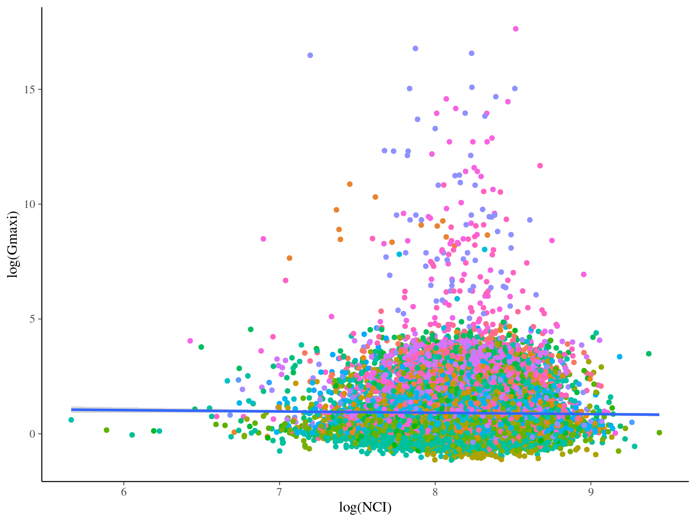

Chapter 7 Growth greta Full
\[\begin{equation} DBH_{y=today,s,i} - DBH_{y=y0,s,i} \sim \\ \mathcal{logN} (log(\theta_{1,s} \times \sum _{y=y_0} ^{y=today} exp(-\frac12.[\frac{log(\frac{DBH_{y,s,i}}{100.\theta_{2,s}})}{\theta_{3,s}}]^2)), \sigma_1) \\ ~ \\ (\theta_{1,s}, \theta_{2,s}, \theta_{3,s}) \sim \mathcal{logN}^{3 \times S}(log(1),1) \\ \sigma \sim \mathcal{N}_T(0,1) \\ ~ \\ \theta_{1,s,i} = \frac{DBH_{y=today,s,i}}{\sum_{y=y0}^{y=2020} exp(-\frac12.[\frac{log(\frac{DBH_{y,s,i}}{100.\theta_{2,s}})}{\theta_{3,s}}]^2)} \\ \tag{7.1} \end{equation}\]
Figure 7.1: Trace plot sp1.
Figure 7.2: Trace plot sp3.
Figure 7.3: Pairs plot.
Figure 7.4: Posteriors for species growth potentials.
Figure 7.5: Posteriors for individual growth potentials.
| log(Gmaxi) | |||
|---|---|---|---|
| Predictors | Estimates | CI | p |
| (Intercept) | 2.79 | 2.46 – 3.12 | <0.001 |
| NCI [log] | -0.15 | -0.18 – -0.12 | <0.001 |
| Random Effects | |||
| σ2 | 0.51 | ||
| τ00 species:(Genus:Family) | 0.85 | ||
| τ00 Genus:Family | 0.40 | ||
| τ00 Family | 0.08 | ||
| N species | 217 | ||
| N Genus | 127 | ||
| N Family | 45 | ||
| Observations | 20500 | ||
| Marginal R2 / Conditional R2 | 0.001 / 0.725 | ||

Figure 7.6: Species phylogeny. The color indicate the median of the species growth potential (Gmaxs).